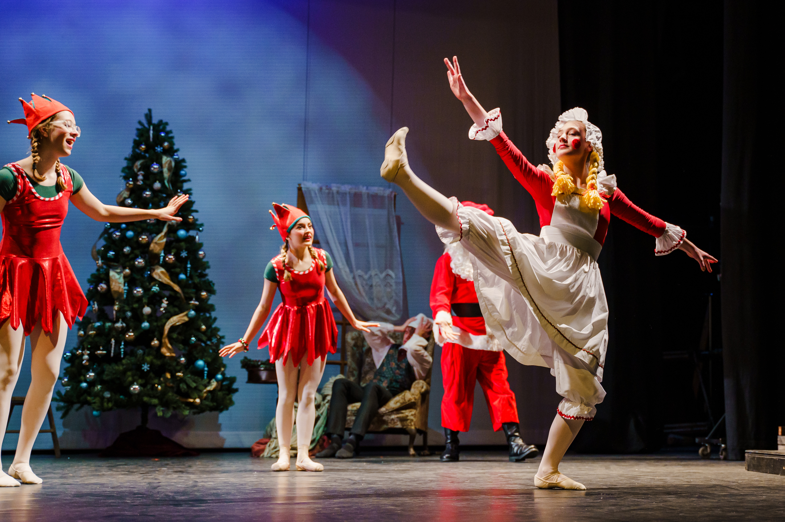
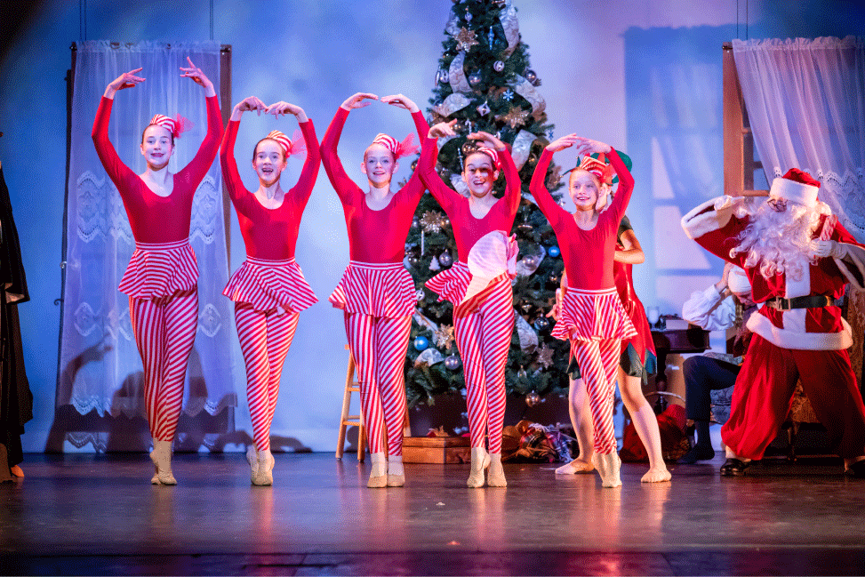
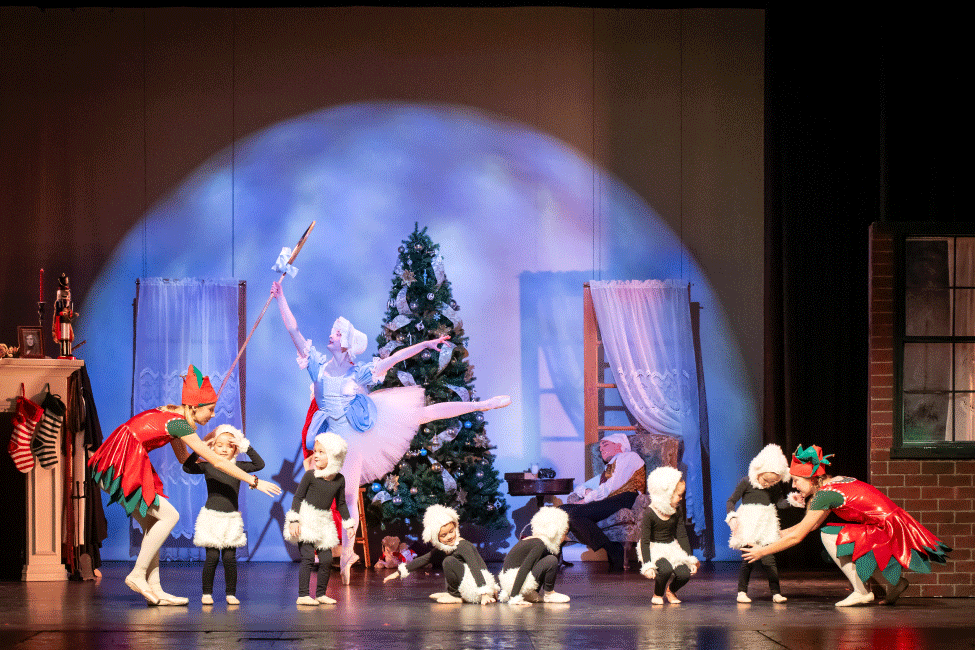
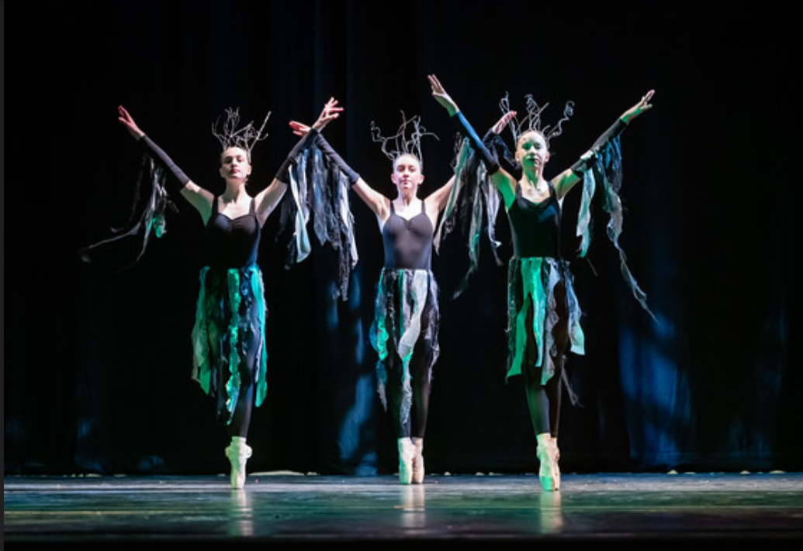

Dancer and Teacher
The Night Before Christmas by Ballet Aligned
Benefiting $11,900 to the Little Lambs Foundation for Kids.

Rag Doll, 2023
Paige also performed this role in 2022.

Candy Canes, 2024
Paige is on the left. She also performed this role in 2023.

Shepherdess, 2024

Scottish Doll, 2025
News Articles
- Cache Valley Ballet School to Hold a Benefit for the Little Lambs Foundation - UPR
- New Holiday Ballet Raises $5,000 Donation to Little Lambs Foundation - CVD
- Michael Ballam to Join Cast of Upcoming Holiday Benefit by Ballet Aligned - CVD
- Civic Ballet Star Returns to Cache Valley to Perform in 'Night Before Christmas' Benefit - CVD
Dancer
Hansel and Gretel by Ballet Aligned
Raised about $500 for The Family Place (Spring 2023), and around $1,000 for the Loaves and Fishes Community Meal (2024).

Wolf, 2023

Trees, 2024
Paige is on the left.
150 Acts of Service Challenge

This was a challenge for my religious organization's celebration of the 150th anniversary of their girls' youth program. We were challenged to complete 150 acts of service within about a month. I chose to write 150 cards to elderly members of our society.